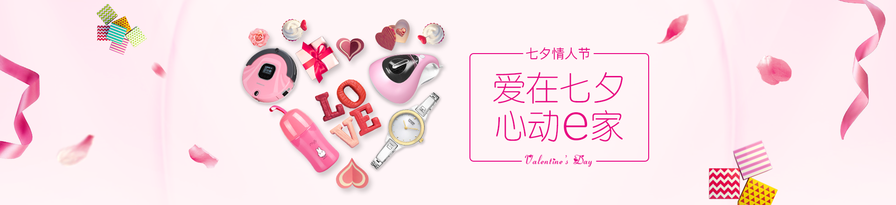

<!DOCTYPE html>
<html lang="en">
<head>
	<meta charset="utf-8">
	<title>组件</title>
	<style type="text/css">
		    *{
		     	padding:0;
		     	margin:0;
		     }
		     .card{
		     	width:100%;
		     	text-align:center;
		     }
		     .card img{
		     	display:block;
		     	width:100%;
		     	height:400px;
		     }
	</style>
</head>
<body>
        <div id="app">
        	  <card></card>
        	  <card></card>
        	  <card></card>
        </div>
		<script type="text/javascript" src="js/vue.js"></script>
		<script type="text/javascript">
			     // 注册一个名叫card的组件
			     Vue.component('card',{
			     	 template:`
			     	   <div class="card">
	        	  			
	        	  			<h2>这是banner大图</h2>
	        	  			<p>浪漫e家,七夕节</p>
	        	  			<button>我是按钮</button>
       				   </div>
       				   `
			     });
			     new Vue({
			     	el:"#app"
			     })
		</script>
		<!-- 
			 组件化就是把页面中特定的区块独立抽出来,并封装成一个可方便复用的组件
			 用vue.component(tagName,options);注册了一个名字为card的组件,这样在需要复用这个组件的地方,我们只需要使用<card></card>就可以了的
			 组件里面的显示内容不可能全都一样,Vue为组件提供了props属性来接受传递进来的参数
		 -->
</body>
</html>